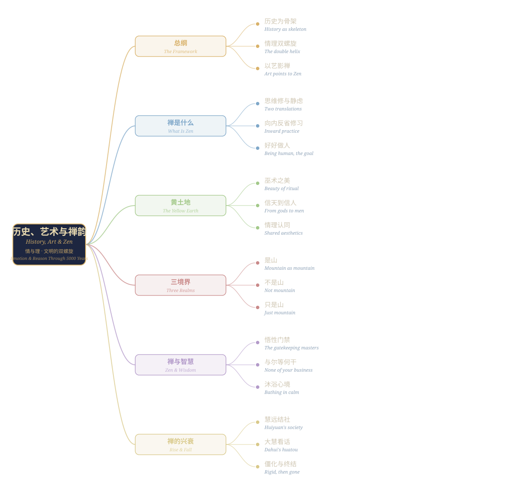

历史、艺术与禅韵：中华文化与文明的脉络
〇 · 书籍信息
基本信息
| 书名 | 「禅韵」是全书的落点——「本书以历史为骨架」，艺术与禅是血肉：讲禅先讲艺术，「感受禅道先悟艺术……也是本书以讲艺术影射禅道的道理」 |
|---|---|
| 作者 | 见君——继《原本的真实》之后的通史转场：把禅放进五千年的人性演进里讲——不编年记事，只抽「情与理」这条线 |
| 结构 | 五部分：从远古到春秋 → 从战国到东汉 → 从魏晋到盛唐 → 从中唐到南宋末年 → 元明清（至鸦片战争前）——每部分史略打底，再讲思想、文艺与禅宗 |
| 体例 | 每部分的章题以诗句领起——「秦时明月汉时关」「城阙辅三秦，风烟望五津」「东南形胜」「我劝天公重抖擞」——史书的开法，诗人的口吻 |
| 一句话 | 禅，因含有情与理的因素，所以它是情与理的辩证统一，这和艺术极为相似——整部中国文化史，就是人性在情与理之间发展与制约的过程。 |
一 · 核心主题总览
这部通史随笔里的四组母题：① 情与理的认同
黄土地章给中华文明找底色：图腾与巫术、占卜与礼仪——「情与理、无形与有形的结合，使巫术礼仪的美」原始而粗犷；到了《诗经》，人类完成从信天向信人的转移——作者把民族认同、地域认同、时间认同、文字认同之外再添一层：「黄土地的认同是一种美的认同、宗教与艺术的认同，为了简单易记我们称之为『情与理的认同』」——这个认同使中国人具有了相同的宗教气息与相同的泛宗教审美情趣。
② 禅是什么
绪论先立定义再破迷思：「禅，是一种向内心反省和修习的方法。它以开悟为标志，以明心见性为悟道，以好好做人为最终目的」——禅的梵文是「禅那」（DHYANA），鸠摩罗什译作「思维修」，玄奘大师译为「静虑」；而达摩面壁九年、禅僧入定，「这个使精神集中思想专一的面壁和入定就叫禅。但严格说起来它并不是禅」——定只是禅的外壳，向内心的反省修习才是内核。
③ 精神三境界
禅与精神境界的段落借来青原惟信的公案：「平常的俗人是『看山是山、看水是水』；修行入门上了正道的人是『看山不是山、看水不是水』；悟了大道的人是『看山只是山、看水只是水』」——作者称之为习禅的「精神三境界」，并化成「是山、不是山、只是山」三个层次；然后老实交代：「这三个层次到底各是什么风光呢？请原谅，这需要各自去品，我无法讲清」。
④ 禅的兴衰
禅宗史被排进朝代史：庐山慧远「开结社第一人，并且是禅净合一的第一人」；大慧宗杲（1089—1163）倡看话禅；元代看话禅与「禅净合一」延续；明朝「禅的僵化与衰退」；清朝——「禅的终结」——第五部分第二章的标题就是判词：禅韵随帝制时代一同落幕，留下一部兴衰完整的档案。
二 · 第一段 绪论 —— 骨架与定义—— 历史 · 禅 · 艺术 ——
历史为骨架
前言给全书定位：「本书以历史为骨架，从哲学观念、思想与情感的发展历程」写起——「这其实也是人性在情与理两方面发展与制约的过程」——所以这不是又一部中国通史：朝代只是章节的骨架，骨架上长的是人性的情与理。绪论列大纲：「历史的回顾与禅思」与「禅与智慧」两节先行——禅是什么、禅与精神境界、禅与长寿——把全书要用的概念一次配齐；从第三部分开始，「佛教和禅宗将成为我们宗教与人文部分的主线」——前两段历史是铺垫，禅韵是终点。
◆ 语言学习 · 概念 · 双螺旋
| 历史为骨架 | 朝代史略只是承重的结构：血肉是思想情感 |
|---|---|
| 情与理 | 人性的两股线：制约与发展——全书的总线索 |
| 以艺术影射禅道 | 方法论的自觉：先悟艺术，再感禅道 |
| 回顾与禅思 | 绪论与结尾同名的呼应：历史讲完要回到禅思 |
句型 ｜ 「这其实也是人性在情与理两方面发展与制约的过程。」——前言的第一判词：五千年的历史换一个读法就不是帝王家谱，是人性两条线的拉锯——情要解放，理要约束，文明就在两者之间生长。
禅的完整定义
「禅是什么」一节给出全书最凝练的一段：「禅，是一种向内心反省和修习的方法。它以开悟为标志，以明心见性为悟道，以好好做人为最终目的」——配套三件套：禅宗，「以此方法为法门的佛教的一支」；禅学，「研究此禅法的学问」——三者分清，天下谈禅的书就少了一半糊涂账。然后破最流行的误读：达摩面壁九年、禅僧入定，「这个使精神集中思想专一的面壁和入定就叫禅。但严格说起来它并不是禅，或者说它并不能解释清楚禅的所有内涵」——把「定」与「禅」切开，是全书的第一个学术动作：定是共法，禅是向内心的反省与修习。
◆ 语言学习 · 概念 · 禅三件
| 禅那 | DHYANA：鸠摩罗什译「思维修」，玄奘译「静虑」 |
|---|---|
| 禅 | 向内心反省和修习的方法：开悟为标志，好好做人为终点 |
| 禅宗 | 以此方法为法门的一支佛教 |
| 禅学 | 研究禅法的学问——与禅本身不是一回事 |
句型 ｜ 「以好好做人为最终目的。」——禅定义的落点最朴素：开悟明心谈玄说妙都只是中转站，禅的终点是做人——把禅讲成神秘体验的人，都停在半路。
三 · 第二段 黄土地 —— 信天到信人—— 巫术 · 诗经 · 认同 ——
巫术之美
第一部分「从远古到春秋」从「黄土地」讲起：原始社会的图腾与巫术、奴隶社会的占卜——「情与理、无形与有形的结合，使巫术礼仪的美」原始而粗犷——巫术不是愚昧的代名词：它是先民把情感（求告）与理性（仪式规程）第一次拧在一起的作品；「封建社会随着诗歌和宗教而诞生」——诗歌与宗教，是情与理最早的公开载体。这一章的名字叫「中国人思想与情感之源」：源头不是某一个圣人，是黄土高原上一代代巫、卜、诗、礼的叠加。
◆ 语言学习 · 概念 · 源头
| 图腾与巫术 | 情与理第一次结合：求告的情感 + 仪式的规程 |
|---|---|
| 占卜 | 奴隶社会的理性化尝试：把不确定性交给龟甲 |
| 诗歌与宗教 | 封建社会的双引擎：情与理各自建制化 |
| 黄土地 | 思想的土壤：一切认同的地理底座 |
习语 ｜ 「情与理、无形与有形的结合。」——巫术之美的配方：最原始的艺术也自带双螺旋——情感给温度，规程给形状：这条配方五千年没变过，只是换了材料。
《诗经》与人性的解放
战国前的转折点在《诗经》：「『悠哉，悠哉，辗转反侧』来得更具人情？更有人性？《诗经》昭示出人类从信天向信人的转移」——贵族开始养士，「鸡鸣狗盗、引车卖浆之徒可以为宾」，「法」「命」之书和钟鼎铭文从神坛上走下来，开始记述人间凡人俗务——「这是人性的解放、历史的必然。它为战国的诸子百家的产生，为百家争鸣的繁荣做好了精神和心理上的准备」。第二部分的判词随之而来：从百家争鸣到独尊儒术，人才的种类与培养、儒道法墨兵各家逐个登场——情与理在不同学派里分头发展。
◆ 语言学习 · 概念 · 信天信人
| 信天到信人 | 《诗经》标记的文明转向：命运的解释权从神移到人 |
|---|---|
| 养士 | 贵族开门：鸡鸣狗盗之徒皆可为宾——人才的平民化 |
| 诸子百家 | 心理准备之后的总爆发 |
| 人性的解放 | 历史必然：凡人俗务登上文字的舞台 |
句型 ｜ 「《诗经》昭示出人类从信天向信人的转移。」——第一部分的最重一判：一首辗转反侧的情诗，比十篇祭祀卜辞更接近文明的心跳——当人开始写自己的失眠，神就开始退场。
四 · 第三段 精神三境界 —— 是山只是山—— 看山 · 品味 · 大师 ——
三个层次
绪论「禅与精神境界及长寿」借公案立尺：「习禅的人都知道修行有三个阶段：平常的俗人是『看山是山、看水是水』；修行入门上了正道的人是『看山不是山、看水不是水』；悟了大道的人是『看山只是山、看水只是水』」——作者称之为习禅的「精神三境界」，化成「是山、不是山、只是山」三个层次以便讲述——然后是全书最诚实的退让：「这三个层次到底各是什么风光呢？请原谅，这需要各自去品，我无法讲清」——境界只能亲证，不能代述：讲禅的人先学会说「我无法讲清」，才算入门。
◆ 语言学习 · 概念 · 三境界
| 是山 | 俗人阶段：眼见为实，山就是山 |
|---|---|
| 不是山 | 入门阶段：解构与怀疑——山被概念拆开 |
| 只是山 | 悟后阶段：山回来了一切如常——见山还是山 |
| 无法讲清 | 诚实的边界：境界可亲证不可代述 |
句型 ｜ 「请原谅，这需要各自去品，我无法讲清。」——写禅书的人最难写的一句：肯承认语言到不了的地方，比引一百条公案更有说服力——无法讲清正是三境界的讲清方式。
悟性差与尔等何干
「禅与智慧」一节有一段带火气的实录：「时常有人给我介绍什么大师什么传人来相见，话不投机，这大师和传人丢下一句『悟性差』就怒容满面，扬长而去。最近又听说咱中国全『悟性差』，人家扬长而去以至于过了国境，去了外国」——作者的回敬不客气：「修行人，不从自身上修、不把自心修到『入空寂』，如何成佛？别人悟性差与尔等何干？」——而真正习禅悟道的人，「在他们明了生死这个道理后，他们热爱生活、热爱生命、热爱心灵，他们一生沐浴于这美好的心境之中」——大师拿悟性当门禁，禅者拿悟性照自己：一念之差，禅与术分家。
◆ 语言学习 · 概念 · 悟性门禁
| 悟性差 | 大师的口头门禁：话不投机的通行证作废章 |
|---|---|
| 与尔等何干 | 作者的反问：修行是自修，不是招生 |
| 明了生死 | 悟道者的第一个成果：然后才有热爱 |
| 美好的心境 | 禅者的日常：沐浴于其中的一生 |
习语 ｜ 「别人悟性差与尔等何干？」——对一切精神权威的通用反问：拿评判别人来证明自己觉悟的人，恰恰证明了自己没觉悟——真悟的人忙着热爱生活，没空发怒容。
五 · 第四段 禅的兴衰 —— 从鼎盛到终结—— 结社 · 看话 · 落幕 ——
情理与艺术同构
绪论给「禅韵」二字下的是结构性的判断：「禅，因含有情与理的因素，所以它是情与理的辩证统一，这和艺术极为相似。感受禅道先悟艺术是释迦牟尼倡导的，也是本书以讲艺术影射禅道的道理」——「禅，因含有网络性和层次性，所以它必定是一个系统的辩证统一」——这就解释了全书的编排：禅不能单独讲，必须放进历史、哲学、艺术的网络里讲——禅韵的「韵」，是系统里各声部合出来的。
◆ 语言学习 · 概念 · 禅韵
| 辩证统一 | 禅的内部结构：情与理、网络与层次 |
|---|---|
| 与艺术同构 | 讲禅先讲艺术的方法论依据 |
| 系统 | 禅不是孤峰：是历史哲学艺术网络里的节点 |
| 韵 | 系统的合声：单抽一条线听不到禅 |
句型 ｜ 「感受禅道先悟艺术。」——全书方法论的钥匙：禅与艺术共享情理结构：懂一幅画的留白，比背十段公案更接近禅——审美是禅的预科班。
看话禅与落幕
禅宗史的收尾在第五部分：「庐山慧远开结社第一人，并且是禅净合一的第一人」；南宋大慧宗杲（1089—1163）倡「看话禅」；元代禅宗的看话禅和「禅净合一」延续香火；明朝，「禅的僵化与衰退」；清朝——「禅的终结」——第二章标题四段连读，就是一部禅的病历：结社（组织化）→ 看话（方法化）→ 合一（妥协化）→ 僵化（板结）→ 终结——禅的死亡不是他杀，是每一步自救都同时是让步。而全书在「历史的回顾与禅思」处收口：五段历史走完，情与理的双螺旋转完五圈——禅韵落幕，脉络留存。
◆ 语言学习 · 概念 · 五步病历
| 结社 | 慧远开创：禅有了组织 |
|---|---|
| 看话禅 | 大慧宗杲的方法论：话头成为标准件 |
| 禅净合一 | 与净土合流：自救的妥协 |
| 僵化与终结 | 明清的板结与落幕：禅随帝制时代一同退场 |
习语 ｜ 「禅的僵化与终结。」——第五部分的章题即判词：任何精神传统在组织化、方法化、妥协化三步之后都会板结——禅的病历，是所有传统的病历。
六 · 人物图鉴与成长弧线—— 主角配角 · 一张表看穿 ——
主要人物
见君——通史的向导——不编年记事：以「情与理」为线，以「禅韵」为终点，把五千年讲成一条双螺旋
禅——全书真正的主角——向内心反省修习的方法：以开悟为标志、以明心见性为悟道、以好好做人为最终目的
庄子——战国段的高光——「庄子与清轻之游」专节：情的一脉在诸子中的去向
屈原——情感的极限样本——「屈原与楚辞」：中国文学第一次把情烧到与理决裂
次要人物（功能位）
| 王国维 | 人生三境界的原主——作者的「是山不是山只是山」由其三境界化成 |
|---|---|
| 鸠摩罗什 | 译名「思维修」——禅的中译第一人之一：译名即解释 |
| 玄奘 | 译名「静虑」——另一条译路：侧重定的一翼 |
| 大慧宗杲 | 看话禅的旗手——1089—1163：禅的方法化是自救也是板结的开始 |
七 · 主题与象征—— 每个道具都在说话 ——
| 双螺旋 ↔ 情理 | 全书的总隐喻——情与理制约与发展：文明是两条线的缠绕生长 |
|---|---|
| 山 ↔ 三境界 | 禅的阶梯——是山、不是山、只是山：风景没变，眼睛换了三次 |
| 骨架 ↔ 历史 | 写法的自觉——朝代史略承重，思想情感为血肉 |
| 诗句 ↔ 章题 | 体例的签名——「秦时明月汉时关」领起战国：史书开出诗的口吻 |
| 病历 ↔ 五步 | 禅的兴衰档案——结社、看话、合一、僵化、终结：传统板结的通用剧本 |
八 · 写作手法赏析—— 怎么写，就能怎么学 ——
① 四线并进
史略、思想、文艺、禅宗四线——每部分同一节奏推进：读者的坐标系永远在场
② 诗句领章
「城阙辅三秦，风烟望五津」——章题全部取自诗词：通史写出了行旅感
③ 定义先行
绪论配齐全部概念——禅、禅宗、禅学三件套先分清：糊涂账提前销账
④ 影射法
以艺术影射禅道——讲禅不直说，借画的留白与诗的余味侧写
⑤ 诚实退让
「我无法讲清」——境界处留白：不硬写写不了的东西，是禅书的文德
九 · 名段欣赏—— 原文精读 · 逐段赏析 ——
十 · 金句摘录—— 14 条 · 中英对照 · 带出处 ——
"本书以历史为骨架……这其实也是人性在情与理两方面发展与制约的过程。"—— 前言
"禅，是一种向内心反省和修习的方法。它以开悟为标志，以明心见性为悟道，以好好做人为最终目的。"—— 绪论 · 禅是什么
"禅，其梵文为「禅那」（DHYANA）。鸠摩罗什译作「思维修」，玄奘大师译为「静虑」。"—— 绪论 · 禅是什么
"这个使精神集中思想专一的面壁和入定就叫禅。但严格说起来它并不是禅。"—— 绪论 · 禅是什么
"禅，因含有情与理的因素，所以它是情与理的辩证统一，这和艺术极为相似。"—— 绪论
"《诗经》昭示出人类从信天向信人的转移。"—— 第二部分 · 诗经与古风
"这是人性的解放、历史的必然。"—— 第二部分 · 论养士与诸子
"黄土地的认同是一种美的认同、宗教与艺术的认同，为了简单易记我们称之为「情与理的认同」。"—— 第二部分 · 黄土地
"平常的俗人是「看山是山、看水是水」……悟了大道的人是「看山只是山、看水只是水」。"—— 绪论 · 精神三境界
"这三个层次到底各是什么风光呢？请原谅，这需要各自去品，我无法讲清。"—— 绪论 · 精神三境界
"修行人，不从自身上修、不把自心修到「入空寂」，如何成佛？别人悟性差与尔等何干？"—— 绪论 · 禅与智慧
"习禅悟道的人，在他们明了生死这个道理后，他们热爱生活、热爱生命、热爱心灵，他们一生沐浴于这美好的心境之中。"—— 绪论 · 禅与智慧
"庐山慧远开结社第一人，并且是禅净合一的第一人。"—— 第三部分之后 · 净土与禅
"大慧宗杲（1089—1163）倡「看话禅」。"—— 第四部分 · 南宋禅宗
十一 · 拓展阅读—— 原文 · 词条 · 译文 ——
十二 · 个人感悟与心得—— 三点心得 ——
三点感悟
① 给历史装上人骨
「历史为骨架」的推论：读史别只记年表——每一段制度与战争的底下都是情与理的拉锯：情要解放，理要约束，读史即读人心。
② 分清禅、禅宗与禅学
绪论三件套的实用价值：谈任何传统先做名词切开——禅是方法，禅宗是教团，禅学是学问：概念切不开，讨论必成糊涂账。
③ 警惕「悟性差」式门禁
大师实录的警示：凡是拿评判别人来彰显自己境界的人，都值得绕行——真境界的表现是热爱生活，不是怒容满面。
这本《历史、艺术与禅韵》最耐读的地方，是它把禅从蒲团上请下来，放回五千年的烟火里：禅不在面壁的九年里，在《诗经》的辗转反侧里、在楚辞的决裂里、在「好好做人」四个字里——情与理的双螺旋转到今天，你我都是它最新的一圈。
十三 · 一页速查（复习用）
| 双螺旋 | 情与理制约与发展：历史的另一种读法 |
|---|---|
| 禅三件 | 禅是方法、禅宗是教团、禅学是学问 |
| 三境界 | 是山、不是山、只是山：眼睛换了三次 |
| 情理认同 | 黄土地的底座：相同的泛宗教审美 |
| 五步病历 | 结社看话合一僵化终结：传统的板结剧本 |
十四 · 全书思维导图—— 一图纵览 ——

一图纵览全书骨架 · 中英双语对照 · 手机端可左右滑动查看全图